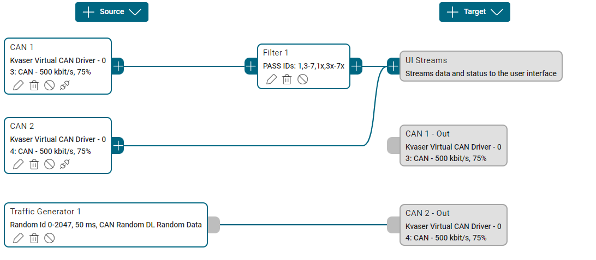

Measurement Setup view
The Measurement Setup view shows the current configuration, i.e. which Kvaser interfaces that are currently configured to be used and how to handle the data they receive. The configuration is illustrated as a node graph that is orientated from left to right, where a node corresponds to a specific Kvaser interface or a feature such as logging messages. The Measurement Setup view opens automatically after creating a new or selecting a saved project, but can also be opened from the vertical tool bar to the left of the application.
An example of a measurement setup is provided below. It contains two Kvaser virtual CAN channels, a Traffic Generator node for generating data on CAN 2 and a pass-through filter on CAN 1. The data is transmitted to a stream.
{kind=link}

A measurement can optionally be kept running in the background even if the Kvaser CanKing application is closed. This can be configured in the user settings.
Nodes
A node has one of three types:
Source
Data processor
Target
All Kvaser interfaces are source nodes, but there is also a source node for replaying log files and generating CAN traffic. A data processor parses the data transmitted from a source node and may for example consist of a database (.dbc file) or a filter. A target node, on the other hand, could be a Message Logger or Signal Logger. All data is also transmitted to a stream (denoted as ‘UI Streams’ in the Measurement Setup view). For a list of all available nodes, sorted according to type, see Standard Nodes.
A node may be enabled or disabled in a measurement setup.
Standard Nodes
This section describes all available standard nodes in detail, including their configuration options, use cases, and best practices.
Customized Nodes
A user may create customized nodes to be able to get additional functionality, like for example a gateway or a cloud connector. Such extension is developed as a Web Assembly component which will be hosted by the Kvaser CanKing service. Once installed, the extension will be available as a node in the Measurement Setup view and able to interact with the CAN and LIN bus.
Available customized nodes are:
J1939 Annotator - Decodes and annotates J1939 Transport Protocol (TP) traffic. See J1939 Annotator for detailed information.
ISO-TP Annotator - Decodes and annotates ISO-TP (ISO 15765-2) traffic on CAN and CAN-FD buses. See ISO-TP Annotator for detailed information.
To make a customized node available in the Measurement Setup view, its service extension must first be installed. Once installed, it can be added to the measurement setup like any standard node. A service extension is installed by selecting More followed by Extensions and Install… from the tool bar menu of the Kvaser CanKing application.
For more information about service extensions, including examples and how to install them, see the separate guide found in the tool bar in the Kvaser CanKing application by selecting Help followed by CanKing Service Extensions SDK Help….
Node Management
This section describes how to add, configure, and manage nodes in the Measurement Setup view.
Adding Nodes
Adding Source Nodes:
In the Measurement Setup view, click the Source button
Select the desired source node type from the menu
Configure the node settings in the dialog
Click Create to add the node
Adding Data Processor Nodes:
Click the + button on an existing source node
Select the desired data processor type
Configure the processor settings
Click Create to insert the processor
Data processors are inserted between the source node and the UI stream, processing all data flowing through that path.
Adding Target Nodes:
Click the Target button
Select the desired target node type
Configure the target settings (file paths, formats, etc.)
Click Create to add the target
Target nodes receive data from all sources after processing.
Configuring Nodes
To edit an existing node:
Click the Edit button (pen icon) on the node
Modify the settings as needed
Click Save to apply changes
Note
Nodes cannot be edited while a measurement is running. Stop the measurement first.
Enabling and Disabling Nodes
Nodes can be temporarily disabled without removing them:
Click the Enable/Disable button on the node
Disabled nodes appear grayed out
Click again to re-enable
- Disabled nodes:
Do not participate in measurements
Retain their configuration
Can be quickly re-enabled when needed
Use Cases:
Temporarily exclude a channel without removing configuration
Test different measurement configurations quickly
Disable expensive data processing during initial testing
Deleting Nodes
To remove a node:
Click the Delete button (trash icon) on the node
Confirm the deletion when prompted
Warning
Deleting a node removes its configuration permanently. Consider disabling instead if you may need it later.
Node Controls (Source Nodes)
Some source nodes have additional runtime controls:
- Bus On/Off (CAN Channel):
Toggle whether the CAN controller is active on the bus
Useful for temporarily disconnecting from the bus without stopping the measurement
Green indicator shows “on bus” state
- Start/Stop (Traffic Generator, Log Replay):
Control traffic generation independently of the measurement
Allows starting/stopping data generation while monitoring continues
Best Practices
Measurement Setup Design
- Keep It Simple:
Start with minimal configuration and add complexity as needed
Use descriptive names for channels when multiple interfaces are connected
Disable unused nodes rather than creating separate projects
- Logical Data Flow:
Organize nodes left-to-right following the data flow
Use consistent configurations across similar channels
- Performance Considerations:
Apply filters early (close to source) to reduce downstream processing
Load only necessary databases to minimize decoding overhead
Use binary log formats (KME, MDF) for better performance than text formats
Channel Configuration
- CAN Channel Best Practices:
Verify bit rate matches your network before connecting
Consider silent mode for error injection testing
Lock to serial number for reproducible hardware configurations
- LIN Channel Best Practices:
Ensure only one master is active on the network
Load databases with schedule tables for master channels
Configure slave responses before starting measurements
Enable “Save LIN message info” for detailed protocol analysis
Database Management
Load databases early in your setup (before other processors)
Use descriptive database file names for easy identification
Keep database files with your project for portability
Update databases when ECU software changes
Verify database versions match your hardware/software configuration
Filtering Strategy
Use pass filters for focused analysis on known messages
Use block filters to remove known noise sources
Combine multiple filters for complex scenarios
Remember: filters affect data to UI and targets, not the physical bus
Test filter configurations before long measurements
Logging Strategy
- File Format Selection:
Use KME for best performance and replay capability
Use MDF for compatibility with industry tools
Use CSV for human-readable output and custom processing
Use Vector formats when integrating with CANoe/CANalyzer
- File Management:
Enable “Append index” to prevent accidental overwrites
Use descriptive file names with date/time or test identifiers
Store log files in a consistent directory structure
Consider disk space for long-running measurements
Archive important logs regularly
- What to Log:
Log messages when you need raw data or timestamps
Log signals when you need processed, engineering values
Consider logging both for comprehensive analysis
Select specific signals in Signal Logger to reduce file size
Testing and Validation
- Before Starting Measurements:
Verify all hardware connections
Check bit rate configurations match bus speeds
Test with short measurements before long captures
Verify log file paths are valid and have sufficient disk space
Confirm databases are loaded correctly
- During Measurements:
Monitor bus load indicators at the bottom of the window
Watch for errors in the Log view (Tools Panel)
Check that logger status shows “Started”
Verify UI stream is receiving expected data
- After Measurements:
Confirm log files were created and contain data
Check file sizes are reasonable
Verify timestamps and data integrity
Archive important measurements with project files
Troubleshooting
Common Issues:
Interface not appearing - Check hardware connections, drivers
Bus errors - Verify bit rate, termination, cable quality
No data received - Check filters, disabled nodes, bus connectivity
Logger not writing - Verify file path, disk space, permissions
Performance issues - Reduce filters, limit databases, lower bus traffic
Diagnostic Steps:
Check Tools Panel > Log for error messages
Verify measurement status indicator (green = running)
Review node states (enabled/disabled, on bus/off bus)
Test with simplified configuration (minimal nodes)
Consult documentation for specific error codes